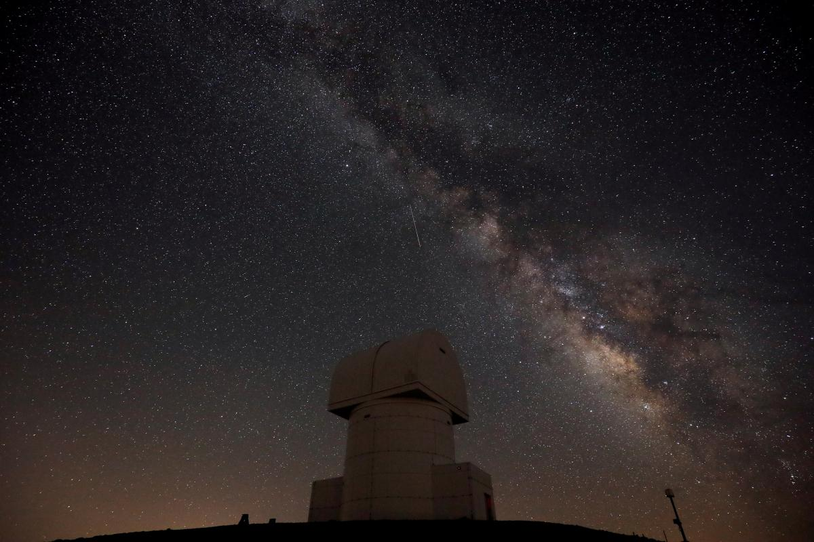
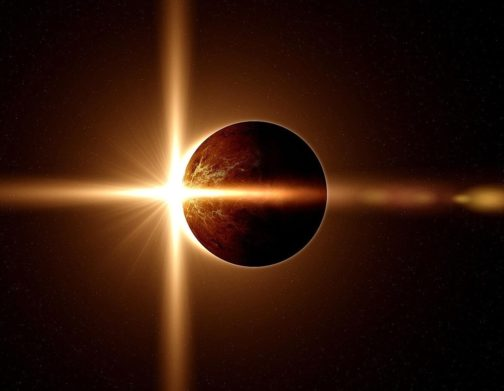

Персеїди є одним з найпопулярніших і рясних метеорних потоків року. Його активність може досягати 100 метеорів на годину. У цьому році пік Персеїд очікується за два дні до молодика, тому умови для спостереження будуть хорошими. Потік видно переважно в Північній півкулі, де радіант завжди знаходиться над горизонтом.

Раз на рік Земля знаходиться між Сатурном і Сонцем. У такому розташуванні, званому протиставленням, планета займає позицію на небі, протилежну Сонцю: коли вона заходить на заході, Сатурн піднімається на сході. В цей час планета здається більше і яскравіше, ніж зазвичай, тому найкраще спостерігати її під час цього period.In об'єктивом бінокля, Сатурн буде виглядати як овальний диск; Побачити кільця можна буде через телескоп. Видима яскравість планети складе 0, 4.

Ще одне сонячне затемнення можна буде побачити у небі над Північною та Південною Америкою. Спостерігачі зі США, Мексики, Беліза, Гондурасу, Нікарагуа, Панами, Колумбії та Бразилії зможуть побачити “кільце вогню” – яскраве коло сонячного світла навколо Місяця. В інших регіонах західної частини земної кулі можна буде спостерігати приватне сонячне затемнення. Наступного разу така подія відбудеться лише через рік і буде видно з Чилі та Аргентини.
